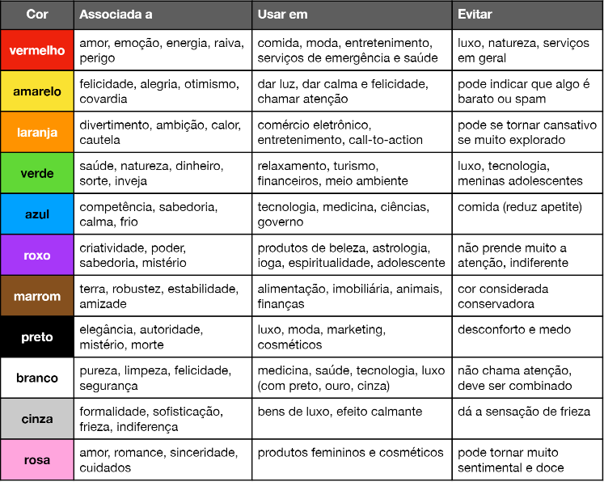

As cores tem um papel fundamental nas escolhas de produtos que compramos, e por isso é muito importante saber harmonizar as cores, abaixo uma imagem e um links onde você pode ler sobre isso.
clique aqui para abrir um pdf sobre cores
Link para site que você pode testar e combinar cores https://color.adobe.com/pt/create/color-wheel
Existe várias formas de representar cores em html, tem o RGB,HSL também a representação Hexadécimal
Quando for fazer um site, geralmente é usado um paleta de 3 a 5 cores(geralmente 4), desconsiderando branco e preto.
testando background-color e color.
Para textos muito longos em sites, de preferência a fontes não serifadas

Agora indo para o css, temos o inline, que como o própio nome sugere, é você colocar como você quer na própria linha.Ex:
<h3 style="color: blue;">EXEMPLO</h3>
Também temos os estilos locais/internos, que geralmente são só usados em por exemplo, site que sÓ tem uma página. Para fazer isso é só colocar no body. A desvatagen é que quando você tem um site com várias páginas, você teria que ficar copiando e colando em cada página. Você pode colocar mais de um estilo, por exemplo quando você quiser alguma coisa a mais só em algumas páginas ai você utilizaria mais de um estilo
Alguns dispositivos não iram suportar algumas fontes, por isso, na hora de colocar as fontes no seu site o ideal é colocar mais de 1, da mesma família para não perder a essencia da fonte. Também é possível você não específicar a fonte, apenas digitando oque a fonte tem que ter ou não por exemplo: sans-serif(sem serifa), serif(serifada), nesses casos o navegador vai pegar a fonte que quiser usando serifa, ou no outro caso sem serifa. Sempre acabe de escrever as fontes com uma específicação, assim se não tiver as fontes desejadas ele pegará uma fonte genérica.
Ex: font-family: Arial, Helvetica, sans-serif;
As duas principais medidas para usar no seu site é px e em. O padrão dos navegadores é de 16px , ele já vem com essa medida. Geralmente 16px = 1em
Temos várias configurações de fontes que podemos fazer, as principais são
text-align: justify;
font-style: oblique;
font-weight: normal;
font-size: 20px;
font-family: 'work sans', Arial, Helvetica, sans-serif;
Em vez de fazer essas 4 configurações de fontes, da para compactar tudo em apenas uma linha, basta fazer isso:
A ordem é font-sytle -> font-variant -> font-weight -> font-size -> font-family
font: italic bolder 20px arial,sans-serif;
Primeiro acesse o google fontes e vai adicionando as fontes que você quer, depois é só importar elas(o próprio google fontes já deixa ali direitinho para você colocar no seu site)
Outro site muito bom para pegar fontes é o dafont nele você terá que baixar as fontes
<style>
@font-face {
font-family: 'love';
src: url('MADEMountain-Regular.otf') format('opentype');
font-weight: normal;
font-style: normal;
}
body {
font-family:'love', arial, Helvetica, sans-serif;
font-size: 3em;
font-weight: normal;
}
- Tipos de format()
- opentype (otf)
- truetype (ttf)
- embedded-opentype
- truetype-aat (Apple Advanced Typography)
- svg
Para dectar fontes dentro de imagens recomendo você ver esse vídeo: aqui, onde o guanabara mostra sites que você pode fazer isso.
Quando usamos css, colocamos por exemplo que o h1 vai ser verde, mas e se eu quiser que todos os h1 sejam verde menos 1, como eu posso fazer isso? Para fazer isso você pode usar o ID(identificador),desta forma:
<h1 id= "principal">
/* CSS */
h1#principal{
text-align:center;
}
Em HTML é id = em CSS é #
em HTML é class = em CSS é .
Referente aos id's, nós temos uma grande limitação: Dentro de um documento HTML, só se pode ter um elemento com o "id" e o seu respectivo nome.
Você pode ter mais de um id em sua página tranquilamente. O que não pode é utilizar dois com o mesmo nome / texto no id. O id é como se fosse um CPF (1 número por pessoa) enquanto a class é o nome (no qual várias pessoas podem ter o mesmo nome).
Pensando nisso, quando temos duas unidades de elementos ou mais e queremos aplicar uma configuração personalizada de estilo em todas elas, nós não devemos usar o "id" e sim o "class".
Outra coisa é que você pode colocar mais de uma elemento em uma class, ex:class = "avancado destaque"(não precisa de vírgula para separar)
Nunca de nomes as classe e as id de acordo com suas formas, mas assim pela sua funcionalidade.
1 - Deslocamento horizontal - O quanto a sombra irá andar para o lado direito ou esquerdo (Valor em negativo para ir pra esquerda, ex: " -10px ") - X OFFSET
2 - Deslocamento vertical - O quanto a sombra irá andar para baixo ou para cima (Valor em negativo para ir pra cima, ex: " -10px ") - Y OFFSEY
3 - O quanto essa sombra irá espalhar/embaçar - BLUR
4 - Nível de alcance/tamanho que essa sombra irá ter (ESSE VALOR GERALMENTE NÃO É USADO, É SÓ NÃO INSERI-LO NA SHORTHAND NESSE CASO) - SPREAD
5 - Qual cor essa sombra vai ter e o nível de transparência (alpha) que essa cor irá ter
Exemplo de Shorthand (sem o valor "spread" ): " box-shadow: 1px 1px 1px black; " (Siga a ordem de inserção de valores do exemplo na hora de usar uma shorthand, caso contrário não funcionará corretamente)
Ao configurar a sombra de uma caixa, é interessante abrir o DevTools e formatar os valores da shorthand pelo Sub Menu de Regulagem "shadow editor" da interface DevTools de maneira manual e observando as mudanças em tempo real na tela do navegador, até encontrar a configuração ideal... Passando essa configuração ideal para o código no VSC posteriormente.
Também é possível inserirmos sombras do LADO DE DENTRO de uma caixa. Apesar de não ser muito recomendável botar isso em prática na maioria dos casos... Para fazer isso basta inserir o parâmetro "inset" como o primeiro valor na Shorthand, exemplo: " box-shadow: inset 1px 1px 1px black; "
Frequentemente usamos somente a cor preta para representar sombras, isso porque sombras coloridas geralmente ficam estranhas e com um efeito "não natural".
Normalmente, após configurar os valores para a sua sombra, ela ainda continuará com uma cor muito forte (sólida)... Para amenizar isso e tornar a exibição algo mais "natural" e suave, adicionamos transparência à cor (black), normalmente 50% de transparência é o recomendado.